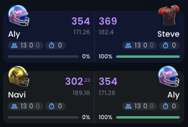
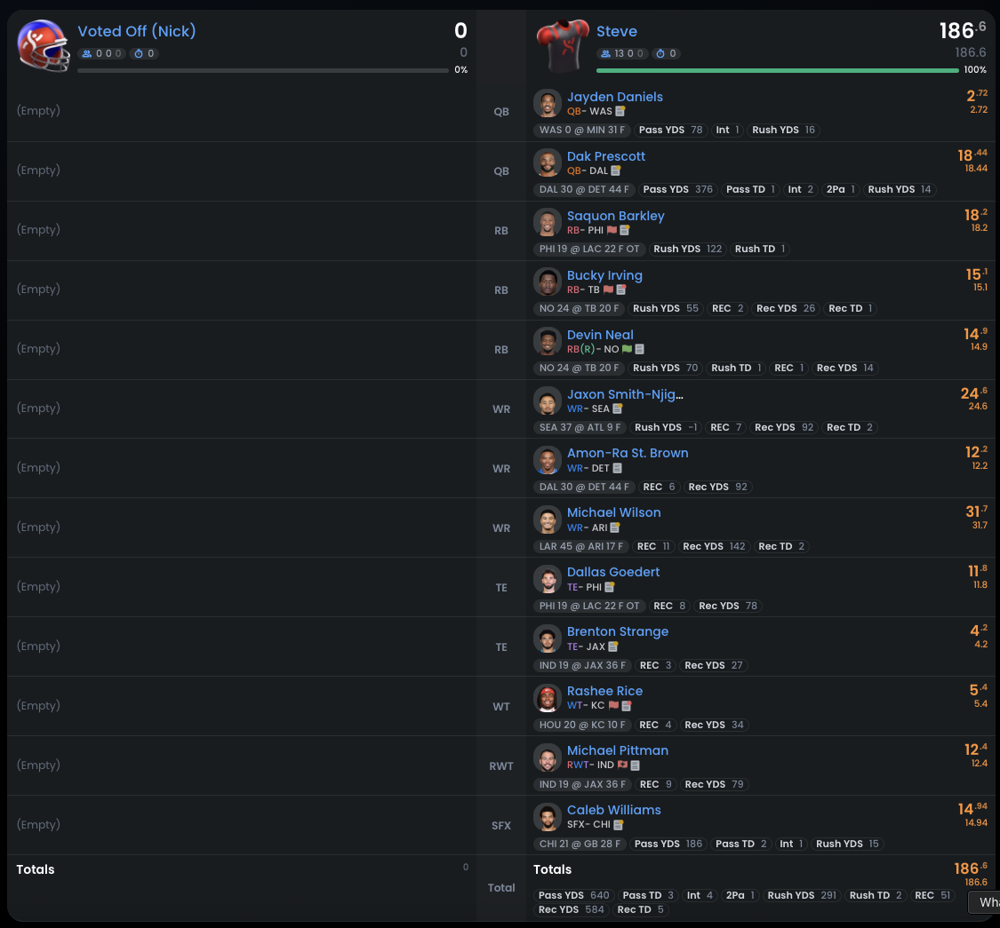
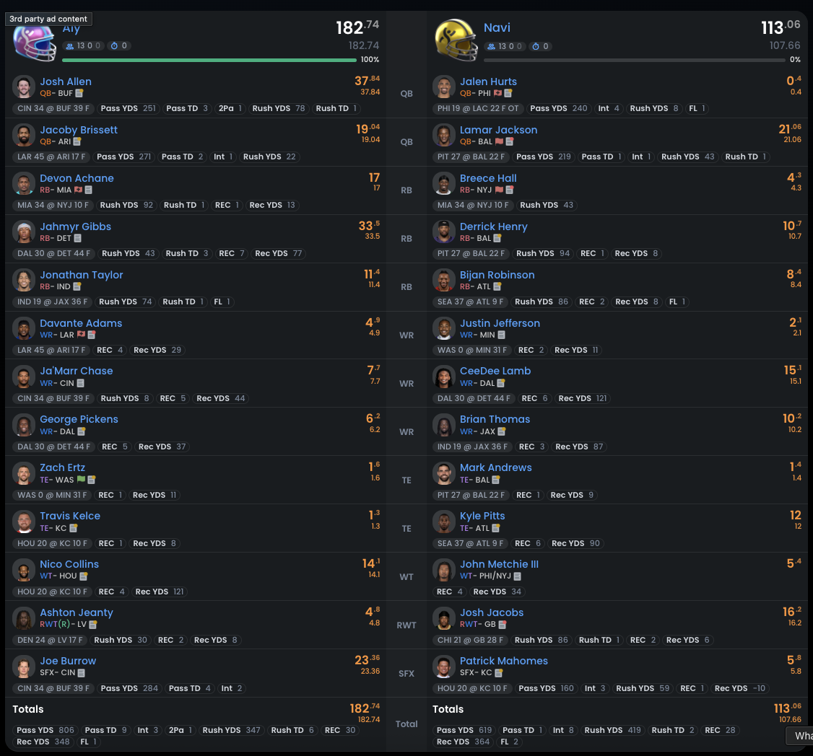

Season 3
Loading the season…
The final result
Each jury vote contributed that juror’s two best fantasy players to the finalist's roster. The championship was decided by total points across NFL Weeks 14 and 15.
Jury votes
Aly5
Navi3
Steve0
Two-week fantasy scores
Steve Winner369
Aly354
Navi302
Scores rounded to whole points. Steve's jury tally did not give him any extra players, but his roster posted the highest combined fantasy score.

Final combined result ↗
Week 14 · Steve ↗
Week 14 · Aly and Navi ↗The available recording captures the jury votes, not the entire final-three Tribal Council.